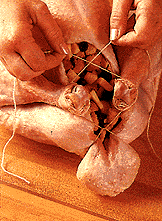

|

|

Tie the legs and tail together.
|
|

|
Place
the turkey, breast side up, on a rack in a shallow roasting pan. Insert a
meat thermometer in the center of the inside thigh muscle, making sure the bulb
of the thermometer does not touch the bone. If the bulb touches the bone,
the thermometer will give an inaccurate reading.
Remember:
The stuffing that is baked inside of a turkey must reach 165 degrees F. To
check the temperature of the stuffing remove the turkey from the oven and
insert an instant read thermometer into the thickest portion of the
stuffing.
|